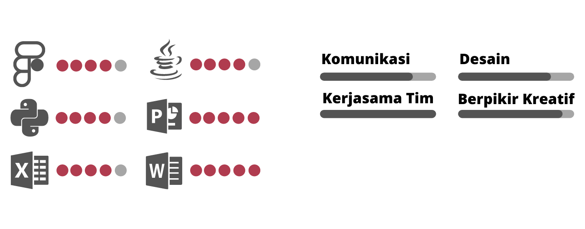

Pengenalan Diri
Halo, selamat datang di website sederhana saya ^^
Perkenalkan nama saya Geria Yuka Rizqiqa Maga Champion,
biasa dipanggil dengan nama Yuka. Saya seorang perempuan yang lahir di Ngawi pada tanggal 20 Mei 2001.
Saya memiliki orangtua yang sangat keren dan memotivasi saya,
ayah saya bernama Reka Budi Seputra dan ibu saya bernama Titik Sri Wahyuni.
Selain itu, saya juga memiliki adik perempuan bernama Gewatra Davina yang saat ini menempuh pendidikan SMA.
Saya menyukai beberapa hal seperti mendengarkan musik, membaca, mendengarkan cerita orang lain, dan jalan-jalan.
Saya juga senang melihat hal-hal yang berkaitan dengan seni maupun pemandangan alam.
Setelah lulus SMP, saya memutuskan untuk merantau dan bersekolah di SMK Telkom Malang.
Saya mengambil jurusan Teknik Komputer Jaringan dan saat ini memilih untuk melanjutkan pendidikan
S1 di ITTelkom Surabaya dengan program studi Sistem Informasi.
Pengalaman dan Organisasi
Lomba IEEE SEACAS Virtual Hackathon (2021)
Menjadi peserta Lomba IEEE SEACAS Virtual Hackathon dengan membuat inovasi
berjudul
"Crowd Management System, Based on Arduino Integrated IOT to Reduce
Covid-19 Case Study a Place to Worship)
Lomba Design UI / UX INSPACE (2021)
Menjadi peserta Lomba Design UI / UX dan membuat desain aplikasi "Ambulansi"
untuk pemesanan Ambulan di Rumah Sakit terdekat.
Asisten Praktikum Dosen (2021)
Berperan aktif sebagai Asisten Praktikum Dosen untuk mata kuliah Algoritma dan
Struktur Data.
Organisasi Himpunan (2020)
Berperan aktif pada Organisasi Himpunan Mahasiswa Sistem Informasi (HMSI)
sebagai Anggota Departemen Humas.
Lomba Karya Tulis Ilmiah (2019)
Menjadi peserta 20 besar Lomba Karya Tulis Ilmiah dengan judul "Optimalisasi
Pelayanan Bagi Pejalan Kaki" di internal IT Telkom Surabaya.
Kemampuan dan Keterampilan
